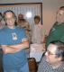
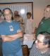
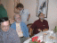
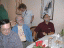
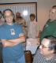
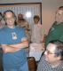

Images from the "36th Anniversary" dinner 15-Jun-2001
If you can identify the people in these pictures, please send e-mail
to Joe Smith.
34 images
Name Size Description
------------ ----- -----------
../ [DIR] Parent directory
anniv.txt 4.00K Announcement, from Clive Dawson
15_1930.jpg 10.0K Bill Westfield at Table 1, Al and Eric at Table 2
15_1931.jpg 53.0K L to R: Les, Al, Irwin, Eric, Rich, Joe's empty chair, ? (dark blue) and ? (light blue)
15_1932.jpg 34.0K ?, ?, Jake, ? (foreground), ? (back), ? (hand raised), ? (lavender), ? (green floral)
15_1933.jpg 34.0K ? (woman), ? (brown shirt), Rose Ann, ? (red shirt), ? (white shirt), ? (tan shirt), Marty, Bill
15_1935.jpg 32.0K ? (hands up), ? (light shirt), Gwen, Gordon, ? (white sweater), ? (red shirt), ? (black blouse)
15_1936.jpg 25.0K ? (black blouse), ? (stripes), Ashley Grason, ? (teal jacket), ? (pantsuit), ?
15_1937.jpg 37.0K Clive Dawson's shiny pink shirt
15_2007.jpg 48.0K Len Bosack, ?, ?, ?, Bill Pits, ?
15_2008.jpg 46.0K ?, ?, ?, ?. Les, ?, Rich, ?, Clive.
15_2009.jpg 55.0K ?, ?, ?, ?, ?, ?. Gwen, Gordon, ?, ?, Ashley, ?.
15_2033.jpg 44.0K ?, ?, ?. ?, ?, ?, ?.
15_2034.jpg 37.0K ?, ?, ?, ?, ?, ?, ?
15_2051.jpg 24.0K Clive Dawson (he and Les Earnest sponsored this dinner)
15_2052.jpg 22.0K Stan Olson (DEC employee #3)
15_2053.jpg 29.0K Gordon Bell (DEC employee #87) and Gwen
15_2054.jpg 33.0K ? (lavender shirt) and ? (blue shirt)
15_2055.jpg 33.0K ? (blue shirt), Rose Anne Giardano (in back), Eric and Al
15_2056.jpg 29.0K ? (guy counting points)
15_2057.jpg 35.0K Jake Jacobs
15_2058.jpg 24.0K Stan Olson, ? (light shirt), ? (blue shirt)
15_2059.jpg 30.0K ? (dress), ? (dark pants), Bobbin Teegarden (sitting), Len Bosack (standing), ?, ?, ?
 

15_2100.jpg 36.0K Al (partial), Marty Frost (blue jacket), Bill Westfield (standing), Ted Panofsky (maroon shirt)
15_2101.jpg 36.0K Eric Smith (green shirt) and Al Kossow (plaid shirt)
15_2102.jpg 39.0K Les Earnest (patterned collar), Irwin Sobel (white t-shirt), Rich Alderson (plaid), ? (woman in back)
15_2103.jpg 34.0K 1st 2020, sold to Linkabit. ? (beard), ? (foreground), ? (brown shirt)
15_2104.jpg 31.0K ? (from Computer Museum)
15_2105.jpg 37.0K Al Kossow, Marty Frost, Bill Westfield, Ted Panofsky
15_2106.jpg 34.0K ? (pantsuit), Richy Lary (green tie-dye, wife behind him), ? (standing, left)
15_2110.jpg 31.0K Ashley Grayson (dark suit), ? (stripes), ? (light shirt)
15_2111.jpg 39.0K Bob Bishop? (tan pants)

 

15_2116.jpg 30.0K Henry Miller (black pants), ? (tan pants), ? (green shirt)
15_2117.jpg 35.0K ? (pantsuit), Richy Lary (green tie-dye), Stan Olson
15_2119.jpg 25.0K Joe Smith (blame the photographer!)
parent directory back to top
 
